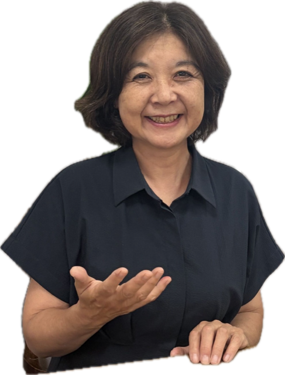

【見本】ここに記事のタイトルが入ります｜前半に検索されることばを入れる
夕方、つい強い言い方をしてしまって、寝顔を見ながら落ち込む——。そんな夜はありませんか。
この見本ページでは、コラムで使う部品の見え方を確認できます。黄色いマーカーは、いちばん伝えたい一文に1記事2〜3か所だけ使います。
まずは、わが家でチェックしてみよう
- 今週、いちばん多く言った一言は？
- そのとき、本当は何を伝えたかった？
- 子どもは、どこに引っかかっていそう？
この記事でわかること
- 部品1：冒頭のイラストとタイトル
- 部品2：みほ先生と保護者の会話
- 部品3：表・グラフ・図
01吹き出しで、悩みと答えを会話にする
また怒鳴ってしまいました…。毎回あとで落ち込むんです。
大丈夫ですよ。気づいたときに「言いすぎた、ごめんね」と伝えれば、そこからやり直せます。
……べつに。
02声かけは「NG → OK」で見せる
みほ先生のポイント
一度に全部変えなくて大丈夫。いちばんよく言ってしまう一言を、ひとつだけ置きかえてみましょう。
03表・グラフ・図で、ひと目でわかるようにする
図1くらべる図（2列）
- 先にあるもの
- もう我慢できない、という自分の気持ち
- 先にあるもの
- この子に何を伝えたいか
図2横棒グラフ（数字は出典つきのものだけ）
※見本のための仮の数字です。実際の記事では、調査名・発表した機関・年を必ず書きます。
図3表（スマホでは縦に並ぶ）
| 場面 | つい言う一言 | かわりの一言 |
|---|---|---|
| 朝 | 早くしなさい！ | あと何分で出られそう？ |
| 夕方 | 宿題やったの？ | 今日は何時から始める？ |
図4ぐるぐる（悪循環）とその止め方
図5ステップ（やることの順番）
- 「言いすぎた」と気づく寝る前でも、次の日でもOK
- 「さっきは強い言い方をしてごめんね」あやまるのは「言い方」
- 伝えたかったことを、短く伝え直す落ち着いた声で
図64つの個性タイプ
気になるところどうしてダメだったのか
気になるところ声の強さや表情
気になるところ次はどうすればいいか
気になるところ自分で決められる余地があるか
04研究・実例・写真で「なるほど」を足す
研究でわかっていること
研究の中身を、むずかしい言葉を使わずに2〜3文で書きます。「〜という結果が出ています」「〜と考えられています」のように、言いすぎない書き方にします。
出典：著者名（発表年）論文名・雑誌名。本文の最後に一覧も載せる実例は、名前・学年など個人がわかることを書かずに紹介します。保護者の方の言葉は、そのまま載せず言いかえます。

ここには、みほ先生の回答の言葉をそのまま入れます。
脳のしくみ
脳科学・発達心理学の「しくみ」を、むずかしい言葉を使わずに説明します。タイトルは「脳のしくみ」か「発達心理学では」。
出典：著者名（年）雑誌名ちょっとひと息
うまくいかない日があっても大丈夫、という安心のひと言や、補足を入れる箱です。
05最後は「やってみる」と「まとめ」
まとめ
- 気づいたときに「ごめんね」と伝える
- 「何を伝えたかったか」を考える
- 子どもが何に引っかかったかを聞く
参考にした研究
- 著者名（年）. 論文名. 雑誌名, 巻(号), ページ.

スクールオーク塾長。シングルで3人の子どもを育て、全員が東大へ。塾長として30年、1,000組以上の親子に寄り添ってきました。国立大学で発達認知学・言語発達学・大脳生理学を専攻。